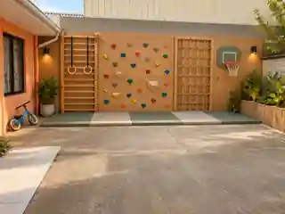
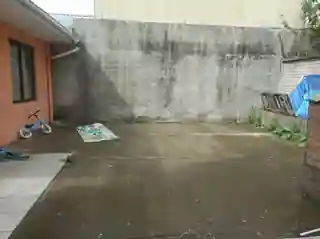
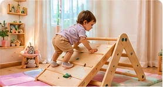
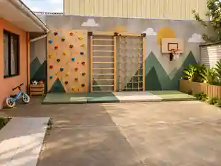
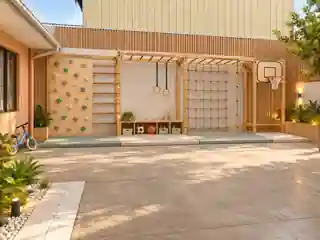

Llegas cansado del trabajo.
Quieres estar con tu hijo, pero no siempre tienes energía para organizar una actividad distinta cada tarde.
Y ese patio pequeño termina siendo una pelota, una silla y la misma pregunta: “¿a qué jugamos ahora?” JUEGA M² convierte los metros que ya tienes en un espacio preparado para moverse, explorar y jugar a su escala.
La foto permanece en tu dispositivo en esta demo. Sin registro.


ANTESNo falta cariño ni ganas. Muchas veces faltan tiempo, ideas y un lugar preparado. Cuando el espacio no ayuda, el adulto termina inventando sobre la marcha y el niño vuelve a correr por la casa.
Quieres estar con tu hijo, pero no siempre tienes energía para organizar una actividad distinta cada tarde.
Entonces todo se reduce a una pelota, una bicicleta o dar vueltas por el mismo lugar.
El cuerpo del niño pide movimiento y juego activo; la casa rara vez está pensada para ofrecérselo de forma ordenada.
El problema no es tener un hijo inquieto. Es no contar con un espacio que convierta esa energía en juego, exploración y movimiento.
No necesita el mismo recorrido que un adulto. Un muro bajo, una rampa corta, una barra, una red o una zona blanda pueden ofrecer muchas acciones distintas en muy poca superficie: subir, bajar, cruzar, equilibrarse, lanzar, gatear, colgarse o descansar.
La propuesta cambia con la edad. No usamos el mismo sistema para un bebé que para un niño de 4, 7 o 10 años.
La estrategia es llevar el juego al perímetro y a la altura para conservar la superficie central. Desliza y compara el mismo patio antes y después.
Desde un rincón sensorial hasta un circuito exterior. La superficie cambia, pero la lógica es la misma: aprovechar mejor lo que ya tienes.




Partimos por lo que el niño puede hacer hoy y dejamos preparado el sistema para lo que vendrá después. El foco es ofrecer oportunidades de movimiento y exploración apropiadas para su edad, siempre con supervisión adulta.
Suelo, texturas, espejo seguro, objetos grandes y juego interactivo. Nada de trepar alto: aquí manda la exploración a ras de piso.
Movimiento de baja altura para gatear, subir, bajar, empujar y equilibrarse dentro de un entorno controlado.
La etapa en que ya quieren trepar, saltar y repetir desafíos una y otra vez. Una pared bien diseñada puede dar muchísimo juego.
Más variedad: travesía, red, anillas y estaciones que invitan a combinar movimiento, fuerza y coordinación.
Para quienes ya necesitan recorridos, retos y pequeñas estaciones deportivas sin transformar todo el patio.
Los rangos de edad son orientativos. Cada instalación se adapta al niño, al espacio y al uso esperado. JUEGA M² no sustituye supervisión adulta ni evaluación profesional cuando corresponda.
No compras una caja cerrada. Eliges una base y nosotros verificamos cómo adaptarla a tu casa.
0–18 meses
Un rincón de suelo para mirar, tocar, alcanzar, desplazarse y explorar sin llenar la habitación.
Rampa, estructura baja y equilibrio para sus primeros desafíos de movimiento dentro de casa.
Activa una pared con escalada baja y apoyo motriz manteniendo libre el resto del espacio.
La transformación más equilibrada: trepa, escalada, suspensión y centro del patio todavía libre.
Un circuito de patio con más recorrido, estaciones y posibilidades deportivas para niños mayores.
Para terrazas irregulares, rincones especiales o familias que quieren una combinación distinta.
Los módulos se cotizan con instalación según soporte, medidas y compatibilidad con el sistema existente.
Sube tu foto, define edad y superficie, elige una base y arma una estimación. La generación fotorealista personalizada será la siguiente capa del producto.
Concentra escalada, trepa y suspensión en el perímetro para dejar el centro libre.
Foto, edad, medidas aproximadas y cómo quieren usarlo.
Propuestas visuales compatibles con superficie y presupuesto.
Soporte, humedad, anclajes, alturas y zona de caída.
Construimos la opción aprobada y la dejamos lista para usar.
El precio incluye la lógica completa del proyecto. Por eso el valor final se confirma después de revisar el lugar.
Antes de fabricar revisamos soporte, fijaciones, altura de caída, superficie amortiguante, exposición al clima y edad de uso. Si una pared no sirve, se cambia el diseño.
Sí. La lógica es aprovechar perímetro y altura, no llenar el suelo. Incluso una pared puede ser un buen punto de partida.
Sirve para entregar una propuesta y un rango. El valor definitivo requiere medidas y validación del soporte.
Sí. La base se diseña para poder sumar rutas, red, anillas, guardado u otros módulos.
La etapa piloto se concentra en Maule para controlar fabricación, instalación y postventa. Otros lugares se evalúan caso a caso.
Ese es precisamente el trabajo del diseño.